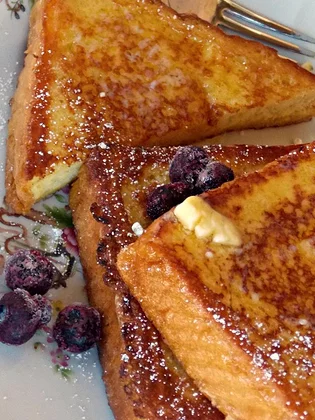

French Toast

Flavorfull, classic, warm, steamy, french toast.
This is a paragraph describing this french toast. This is a paragraph describing this french toast.This is a paragraph describing this french toast.This is a paragraph describing this french toast.This is a paragraph describing this french toast.This is a paragraph describing this french toast.This is a paragraph describing this french toast.This is a paragraph describing this french toast.This is a paragraph describing this french toast.
Ingredients
- 2 cups whole milk
- 2 tablespoons brown sugar
- 4 large eggs
- 1 teaspoon double-strength imitation vanilla extract (such as Goodman's Route 66)
- ½ teaspoon almond extract (such as Watkins® pure almond extract)
- ½ teaspoon ground cinnamon
- ¼ teaspoon ground nutmeg
- ⅛ teaspoon ground allspice
- 8 thick slices slightly stale Texas toast
Steps
- Mix whole milk and brown sugar in a large bowl.
- Beat eggs, vanilla extract, almond extract, cinnamon, nutmeg, and allspice together in a separate bowl until the eggs are well beaten; add to the milk mixture and stir to dissolve the brown sugar.
- Heat a non-stick skillet or griddle over medium-low heat.
- Set one slice of Texas toast into the milk mixture; let soak until moistened, about 10 seconds per side.
- Cook the dipped toast in the preheated skillet until bottom is golden brown, 3 to 5 minutes; flip toast and continue to cook until the other side is browned, 3 to 5 minutes more. Repeat dipping and cooking with remaining bread slices.